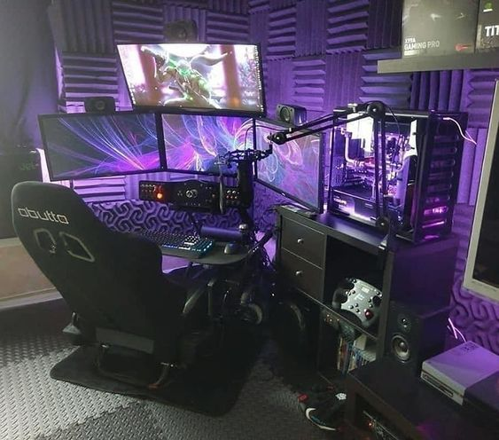

Building a computer can be a stressful process, from picking out the parts, to actually building it.
But dont worry,thats what I'm here for! First we will have to figure out your budget and the reason
behind your new computer. From gaming, to work, to just having one to search the internet all matter
when you first start building your PC. Once you get your parts picked, either email me or search a tutorial on
YouTube on putting together your PC. Links will be included.
https://www.pcgamer.com/gaming-pc-build-guide/
What Brand?
This is purely a personal preference on what brand to choose when building a PC.
Intel Products- Personally my favorite, never had a issue with overheating, etc..
AMD- Im not the biggest fan of them, since most of AMD products have overheated in the past, but that could
be because of not enough air circulating in my room. I do know people who love AMD products, so again its all
preference.
Now Intel is normally a bit more expensive than AMD.. But theres a saying, you get
what you pay for; and i like to use that thought process behind building a PC.
Streaming Gear

Streaming Components:
A streamning PC with a capture card.(IF your serious about taking streaming to the next level
Professional grade microphone with a stand
HD webcam
A sturdy desk
A monitor mount for dual monitors.
Last but not least, a comfy chair; since you will be sitting in it majority of the day